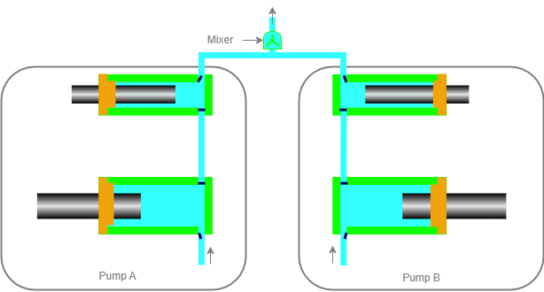
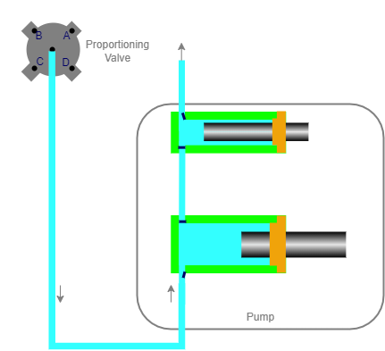

Hey there! Let’s talk about the different ways scientists separate compounds in liquid chromatography (LC). There are two main methods: isocratic and gradient.
Isocratic separation just means using a constant mixture of solvents to separate compounds. It’s pretty straightforward and easy to do, but it might not always give the best results.
Gradient separation, on the other hand, uses a changing mixture of solvents to improve the separation process. This can lead to better peak shapes and faster analysis times. When scientists are developing a gradient mixing method, they can use either a binary or quaternary pump.
Binary pumps mix solvents at high pressure, which is great for high-pressure gradient (HPG) analysis. Quaternary pumps, on the other hand, mix solvents at low pressure.
Binary pump or High Pressure Gradient Pump
Do you know what is the difference between binary and quaternary pumps?
Binary pumps are the most popular pumps used in high-performance liquid chromatography (HPLC). They are known for their ability to create gradients using two solvents. They’re perfect for high-throughput and high-resolution (U)HPLC, or LC-MS applications.
So, how do binary pumps work? Well, they use two pump blocks and two solvent inlet lines to mix two individual solvents at high pressure. The two solvents are mixed in a mixing chamber after the pump heads, creating a high-pressure proportioning environment. This means that the solvents are already under pressure before they reach the mix-point where the mixing occurs.

Let’s say you’re running a method that uses Solvent A and Solvent B at a ratio of 70:30. If your flow rate is 1.0 mL/min, the pumps would deliver 0.70 mL/min for Solvent A and 0.30 mL/min for Solvent B.
Binary pumps are great for routine and high-throughput applications that require a two-solvent gradient. They’re easy to use and can be controlled using software. Plus, they’re capable of creating complex gradients that can be changed over time.
What Is a Quaternary Pump or Low Pressure Mixing (LPM) pump
Hey there! Today, I am going to talk about quaternary pumps. These pumps are used for separating different substances efficiently. The cool thing about them is that they can use up to four solvents for gradient separation.
Basically, these pumps mix the solvents at low pressure, which is why they’re sometimes called low-pressure mixing (LPM) pumps or low-pressure gradient (LPG) pumps. Don’t worry if these terms sound confusing, they all mean the same thing.

So, what is a quaternary pump? It’s a pump that uses up to four different solvents to create gradients. These pumps are great for method development or when you need flexibility in your mobile phase composition. They use a single pump block and four solvent inlet lines to mix the solvents. The first plunger withdraws the solvents under low pressure, while the second plunger pushes an accurate flow rate under high pressure into the system. The mixing of the solvents occurs inside the first plunger cylinder, or a mixer can be installed after the proportioning valve in some designs. But, what’s a proportioning valve? It’s a fancy piece of equipment that opens the valve of each solvent to deliver an equivalent amount to the pump heads. As an example, Let’s say you’re a scientist, and you need to mix solvent A, B, C, and D in equal parts. The proportioning valve would open the valve of each solvent to deliver an equivalent sized packet of solvent to the pump heads.
Since these pumps use low-pressure mixing to create gradients. This means that solvent degassing or the use of a vacuum degasser is necessary. The pumps can be controlled by software and offer the flexibility to change the composition of the mobile phase over time. They’re perfect for scientists who need to run methods with different solvent ratios. So, why are these pumps so great? Well, they’re perfect for separating complex mixtures because they can use different solvents to create a gradient that separates the different substances. This means that you can get more accurate results and save time.
Another thing that’s awesome about quaternary pumps is that they’re really versatile. They can be used in a variety of industries, from pharmaceuticals to food and beverage.
One of the drawbacks is that they have a higher dwell volume. This means that it takes longer for the system to re-equilibrate after each sample is completed. It’s like waiting for a pot of water to boil - it takes longer if there’s more water in the pot.
Another issue with LPMs is that the extra dwell volume can create an isocratic hold if it’s not taken into account during a method transfer. This can cause problems down the line, so it’s important to be aware of it.
In summary, both binary and quaternary pumps have their pros and cons. It’s up to you to decide which one is best for your specific needs. But now you know a little more about these pumps, and that’s always a good thing!